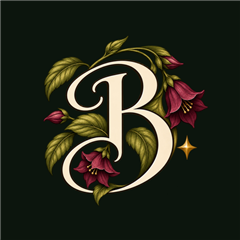
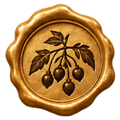
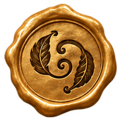
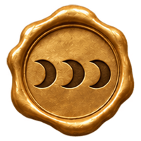
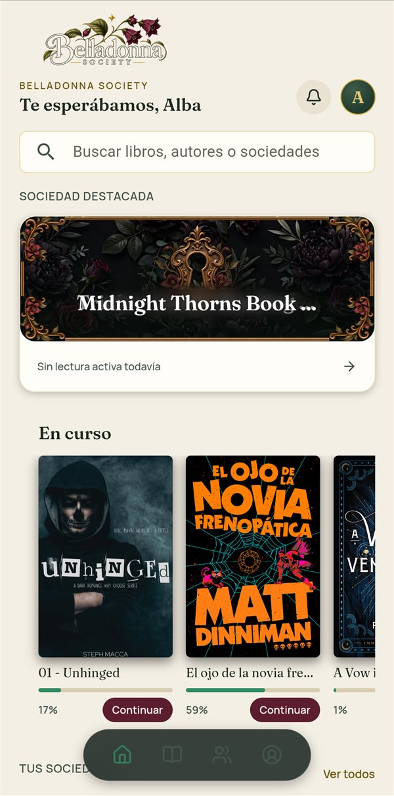
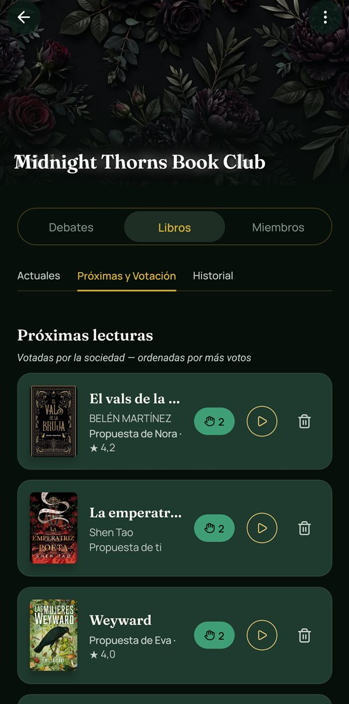
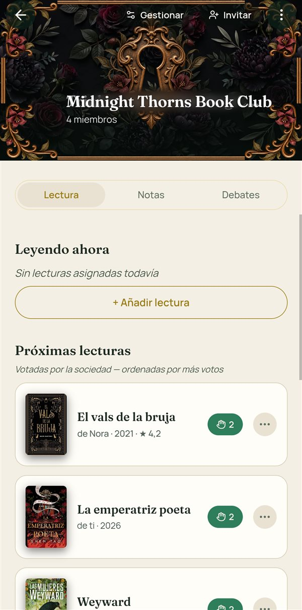
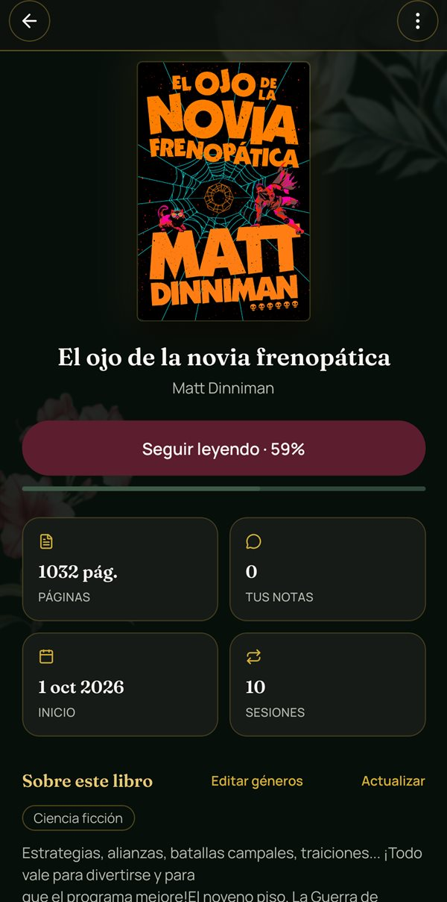
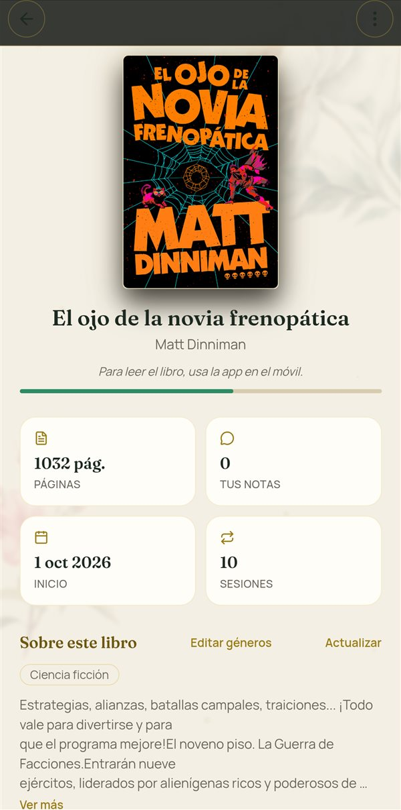

01 / READING & COMMUNITY

App móvil · Android, iOS y webBelladonna Society
Tengo un club de lectura con amigas en Telegram. Repartimos cada libro en fases, pero siempre hay quien va por delante y quien se queda atrás, y no podíamos comentar sin destripárselo a nadie. Encima, en el mismo hilo hablamos de todo, así que los comentarios se perdían. Yo leo en el móvil y quería subrayar una línea, comentarla ahí mismo y que a las demás les llegara el aviso con lo que había escrito y en qué página.
Lo que la hace nuestra
- Comentarios sobre la línea exacta. Las demás reciben el aviso con la página y el comentario.
- Sin spoilers: lo que va por delante de tu lectura se queda sellado hasta que llegas. Para leerlo hay que «romper el sello».
- Todo el club en un sitio: fases de lectura, debates y votación de la próxima lectura, separados de la charla del día a día.
- Una identidad con personalidad: una orden secreta botánica, con su lema en latín, 25 sellos de lacre y 6 grados.
- Privacidad entre socias: los emails no se ven entre usuarias y el acceso a los datos está protegido en 19 tablas.
Decisión clave
El spoiler se resuelve con diseño, no pidiendo cuidado: cada comentario queda anclado a su línea y sellado hasta que llegas. Romper el sello es una decisión tuya.



Algunos de los 25 sellos que se ganan leyendo





Mi parte: idea, producto, UX/UI, marca y las reglas que sigue la IA · La IA: escribe el código bajo esas reglas; yo lo reviso.